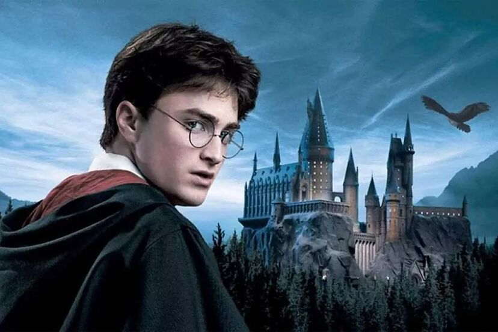
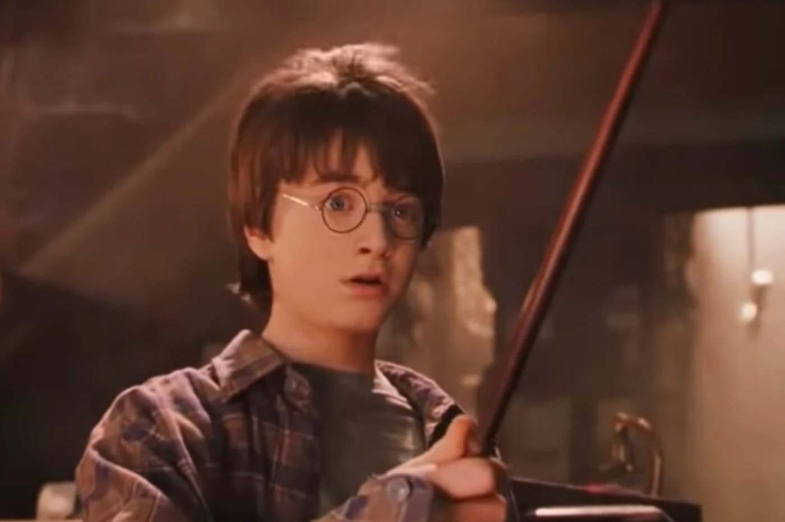
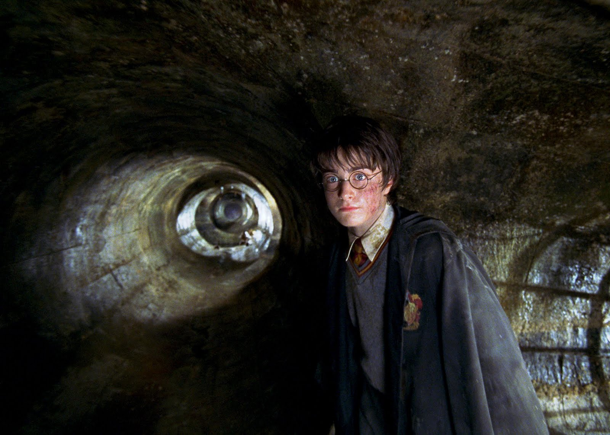
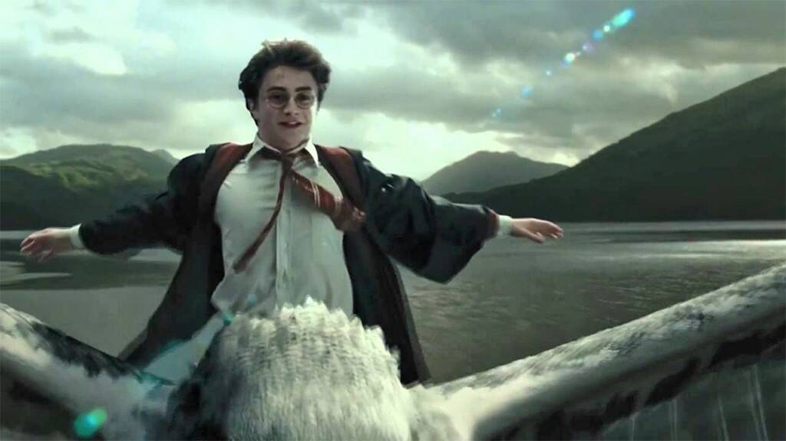
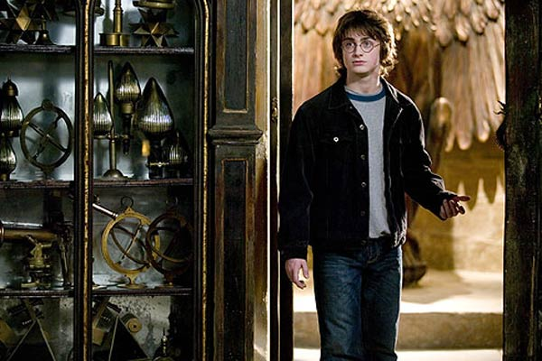
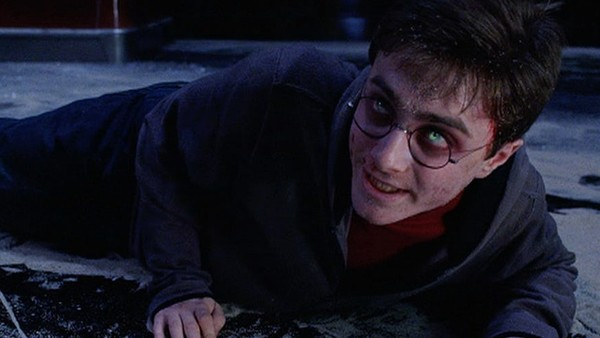
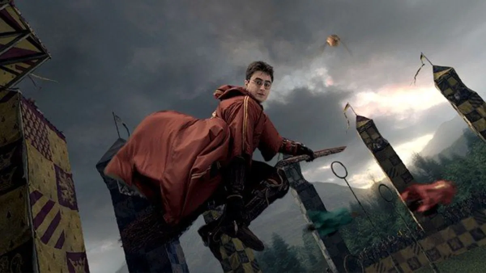
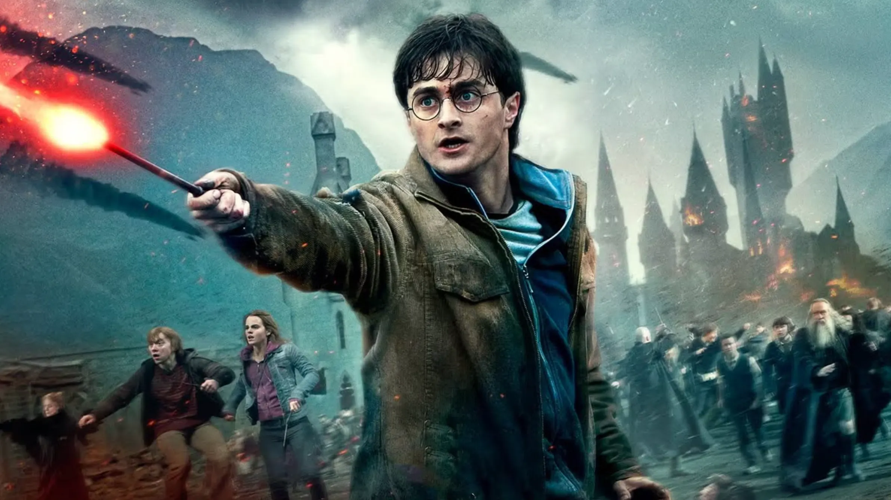

Harry Potter es conocido como el niño que sobrevivió debido a su increíble logro de sobrevivir al hechizo mortal, Avada Kedavra, de Lord Voldemort siendo un bebé. A lo largo de su vida en Hogwarts, Harry enfrenta muchos desafíos, siempre acompañado de sus amigos y guiado por su valentía y determinación.
Durante la primera pelicula se entero que era un mago gracias a Hagrid y fue invitado a unirse a Hogwarts. En el tren de camino ahí hizo amistad con Ron Weasley y conocio a Hermione Granger. A causa de una clase de magia, Hermione se enfado con Ron a causa de su falta de respeto y a causa de que Harry y Ron la salvaron del troll y Hermione los defendio de los profesores hicieron amistad. Tambien a causa de una supuesta broma de Draco se convertio en el jugador de Quidditch mas joven en un siglo. A causa de un castigo por salir en horarios no adequados los tres y Draco fueron castigados en el Bosque Prohibido donde Harry se dio cuenta que Voldemort aun vivia y buscaba la piedra filosofal. Mas adelante se entero que el profesor Quirrell era quien ayudaba a Voldemort y conseguio estropearle los planes
En su segundo año, se dio a conocer que la camara de los secretos fue de nuevo abierta. Muchos de los compañeros de Hogwarts culparon a Harry de que fue él quien abrió la camara de los secretos a causa de que hablaba parsel. Pero a causa de que su mejor amiga, Hermione fue petrificada dejaron de culparlo. Cuando mas adelante se dio a conocer que Ginny Weasley estaba en la camara de los secretos, tanto Harry como Ron fueron a salvarla. Más adelante se entero de que el verdadero culpable era Tom Riddle (Lord Voldemort de joven) y conseguio derrotar al basilisco, destruir el diario y salvar a Ginny
En su tercer año, se entero de que Sirius Black el mejor amigo de su padre y su padrino fue quien traiciono a su padre. Más adelante en cambio, gracias al Mapa de los Merodeador, Remus se entero que Peter Pettigrew seguia vivo y comenzo a sospechar que él era el verdadero culpable. En la casa de los gritos se enteraron Harry, Ron y Hermione que el verdadero culpable era Peter Pettigrew. A causa de que esa noche habia luna llena, Peter logro escapar y Sirius encarcelado esperando el beso del dementor. Pero a causa de el plan de Albus, Hermione utilizo el giratiempo y junto con Harry lograron salvar a Sirius.
En el cuarto año, lo apuntaron en contra de su deseo en el Torneo de los Tres Magos y no tubo otra opción mas que participar. Ron se enfado con Harry ya que pensaba que se apunto sin decirle. A causa de que en la primera prueba noto que era de estar locos para apuntarse, volvieron a ser amigos. Con ayuda de Hermione y las pistas que les fue dada por Hagrid y Cedric logro llegar hasta la tercera prueba. En el laberinto, Harry y Cedric se ayudaron entre ellos ambos lograron ganar pero resulto que la copa es un trasladador, donde ahi se encontraba Voldemort y Petter. Mataron a Cedric y Voldemort conseguio regresar con un cuerpo fisico y reto a Harry pero a causa de que ambas varitas tenian el mismo nucleó y fueron obligadas a pelear entre ellas, se convertio en Priori Incantatem.
En el quinto año, junto con Hermione y Ron crearon el Ejercito de Dumbledore a causa de que la profesora Umbridge no les enseñaba hechizos, además participo en la batalla en el Departamento de Misterio. Y logro salvarse de la poseción de Voldemort que aprovecho que Harry andaba enfadado a causa de la muerte de su padrino a manos de Bellatrix.
En el sexto año, utilizo los hechizos del libro de pociones del principe mestizo, que despues de la muerte de Albus se entero de que Snape era el principe.
En el septimo año, tanto Harry como Ron y Hermione abandonan Hogwarts a causa de la muerte de Dumbledore y para destruir los horcruxes para poder derrotar a Voldemort. En la batalla de Hogwarts derrota a Voldemort.
Después de la guerra regresa a Hogwarts para terminar sus estudios. Años después se convierte en auror y se casa con Ginny Weasley, con quien tiene tres hijos: James Sirius, Albus Severus y Lily Luna. Es el padrino de Teddy Remus Lupin.
Reconocido por su cicatriz en forma de relámpago y su hechizo más utilizado, Expelliarmus. También es conocido como El Elegido después de darse a conocer que Lord Voldemort está vivo. Destinado a pelear hasta que uno de los dos muera a causa de la profecía.

Harry Potter y la piedra filosofal
"Yo no elegí esto, pero esto es lo que soy"

Harry Potter y la cámara secreta
"Voldemort mato a mis padres, no es más que un vulgar asesino."

Harry Potter y el prisionero de Azkaban
"No me interesa lo que le pase a Pettigrew, solo quiero que Sirius esté libre."

Harry Potter y el cáliz de fuego
"¡Voldemort ha vuelto!"

Harry Potter y la orden del fénix
"Tú eres el débil, porque nunca conocerás el amor o la amistad."

Harry Potter y el misterio del príncipe
"No tienes que decirme que soy el elegido. Yo ya lo sé."

Harry Potter y las reliquias de la muerte
"No importa lo que pase, lo que más me importa es que mis amigos estén a salvo."